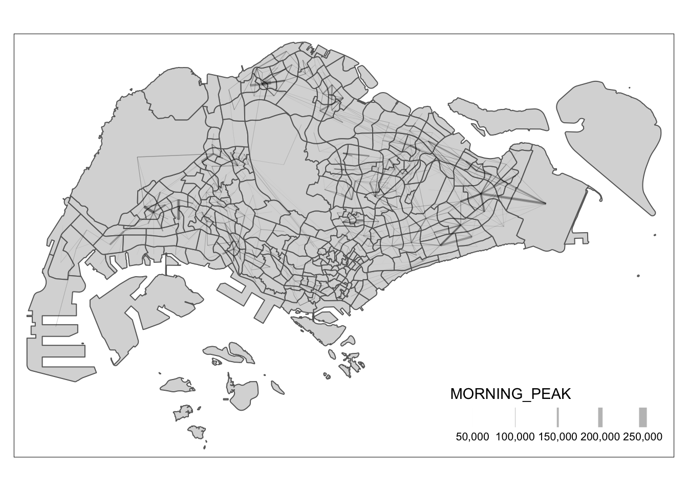

pacman::p_load(tmap, sf, DT, stplanr,
performance,
ggpubr, tidyverse)Exercise 3: Processing and Visualizing Flow Data
1. Getting Started
1.1 Install and launching R packages
The code chunk below uses p_load() of pacman package to check if the packages below are installed into the R environment. If they are, then they will be launched into R.
1.2 Importing the OD data
We will be using three data sets for this exercise. Data were retrieved for the following:
- Passenger Volume by Origin Destination Bus Stops data set for the month of October- Aspatial data
- Bus Stop. - Geospatial data that provides the location of bus stop
- MPSZ-2019 - Geospatial data that provides the sub-zone boundary of URA Master Plan 2019.
In this exercise, we are interested to build an OD matrix with the above data sets.
1.2.1 Importing Aspatial Data
The code chunk below uses st_read() of sf package to import the 1st data set into R. The imported shapefile will be simple features object of sf.
odbus <- read_csv("data/aspatial/origin_destination_bus_202310.csv")
glimpse(odbus)Rows: 5,694,297
Columns: 7
$ YEAR_MONTH <chr> "2023-10", "2023-10", "2023-10", "2023-10", "2023-…
$ DAY_TYPE <chr> "WEEKENDS/HOLIDAY", "WEEKDAY", "WEEKENDS/HOLIDAY",…
$ TIME_PER_HOUR <dbl> 16, 16, 14, 14, 17, 17, 17, 7, 14, 14, 10, 20, 20,…
$ PT_TYPE <chr> "BUS", "BUS", "BUS", "BUS", "BUS", "BUS", "BUS", "…
$ ORIGIN_PT_CODE <chr> "04168", "04168", "80119", "80119", "44069", "2028…
$ DESTINATION_PT_CODE <chr> "10051", "10051", "90079", "90079", "17229", "2014…
$ TOTAL_TRIPS <dbl> 3, 5, 3, 5, 4, 1, 24, 2, 1, 7, 3, 2, 5, 1, 1, 1, 1…1.2.2 Importing Geospatial Data
As identified, we will be using two geospatial data.
1.2.2.1 Import bus stop
The code chunk below uses st_read() of sf package to import the busstop into R. The imported shapefile will be simple features object of sf.
busstop <- st_read(dsn = "data/geospatial",
layer = "BusStop") %>%
st_transform(crs = 3414)Reading layer `BusStop' from data source
`/Users/smu/Rworkshop/jiawenoh/ISSS624/Hands-on_Ex/Hands-on_Ex03/data/geospatial'
using driver `ESRI Shapefile'
Simple feature collection with 5161 features and 3 fields
Geometry type: POINT
Dimension: XY
Bounding box: xmin: 3970.122 ymin: 26482.1 xmax: 48284.56 ymax: 52983.82
Projected CRS: SVY211.2.2.2 Importing MPSZ-2019
Then, we will use the same approach to import MPSZ-2019 into R.
mpsz <- st_read(dsn = "data/geospatial",
layer = "MPSZ-2019") %>%
st_transform(crs = 3414)Reading layer `MPSZ-2019' from data source
`/Users/smu/Rworkshop/jiawenoh/ISSS624/Hands-on_Ex/Hands-on_Ex03/data/geospatial'
using driver `ESRI Shapefile'
Simple feature collection with 332 features and 6 fields
Geometry type: MULTIPOLYGON
Dimension: XY
Bounding box: xmin: 103.6057 ymin: 1.158699 xmax: 104.0885 ymax: 1.470775
Geodetic CRS: WGS 842. Data Processing
After importing the data, we noticed that ORIGIN_PT_CODE and DESTINATION_PT_CODE are in numeric data type;. Hence, we could convert it into character data type.
Show the code
odbus$ORIGIN_PT_CODE <- as.factor(odbus$ORIGIN_PT_CODE)
odbus$DESTINATION_PT_CODE <- as.factor(odbus$DESTINATION_PT_CODE) 2.1 Data Extraction
We are interested in the commuting flows on Weekday between 6 to 9 o’clock. As such, we will run the following code :
Show the code
odbus6_9 <- odbus %>%
filter(DAY_TYPE == "WEEKDAY",
between(TIME_PER_HOUR, 6, 9)) %>%
group_by(ORIGIN_PT_CODE,
DESTINATION_PT_CODE) %>%
summarise(TRIPS = sum(TOTAL_TRIPS))
Tip
Instead of doing pipe on two filters, we could add in additional conditions in `filter()
For future use, we could save the output in rds format and re-import into the R environment.
write_rds(odbus6_9, "data/rds/odbus6_9.rds")
odbus6_9 <- read_rds("data/rds/odbus6_9.rds")2.2 Geospatial Data Wrangling
2.2.1 Combine busstop and mpsz
Next, we will populate the planning subzone code of mpsz sf data frame into busstop sf data frame through st_intersection() for point and polygon overlay. Note: the output will be a point sf object.
Show the code
busstop_mpsz <- st_intersection(busstop, mpsz) %>%
select(BUS_STOP_N, SUBZONE_C) %>%
st_drop_geometry()Similarly, we can save the data:
write_rds(busstop_mpsz, "data/rds/busstop_mpsz.rds") 2.2.2 Append busstop_mpsz onto odbus6_9
We will be performing a left_join() to append the subzone code onto odbus6_9 data frame. To ensure that there is no duplicate, we can use unique() to retain the distinct records.
Show the code
od_data <- left_join(odbus6_9 , busstop_mpsz,
by = c("ORIGIN_PT_CODE" = "BUS_STOP_N")) %>%
rename(ORIGIN_BS = ORIGIN_PT_CODE,
ORIGIN_SZ = SUBZONE_C,
DESTIN_BS = DESTINATION_PT_CODE) %>%
unique() %>%
ungroup()2.2.3 Update od_data frame with MPSZ
Next, we will update od_data data frame with the planning subzone codes.
Show the code
od_data <- left_join(od_data , busstop_mpsz,
by = c("DESTIN_BS" = "BUS_STOP_N")) %>%
unique() %>%
ungroup()Then, we will remove NA and sum the trips.
Show the code
od_data <- od_data %>%
rename(DESTIN_SZ = SUBZONE_C) %>%
drop_na() %>%
group_by(ORIGIN_SZ, DESTIN_SZ) %>%
summarise(MORNING_PEAK = sum(TRIPS))
#save output
write_rds(od_data, "data/rds/od_data.rds")
od_data <- read_rds("data/rds/od_data.rds")3. Visualising Spatial Interaction
In this section, we will prepare a desire line by using stplanr package. It will be computed based on three steps approach:
Step 1 : Remove intra-zonal flows
Step 2 : Create desire lines
Step 3 : Visualization
We will used the following code to remove intra-zonal flows (this will not be plotted!)
od_data1 <- od_data[od_data$ORIGIN_SZ!=od_data$DESTIN_SZ,]We will be used od2line() of stplanr package to create desire lines
flowLine <- od2line(flow = od_data1,
zones = mpsz,
zone_code = "SUBZONE_C")We will be using the following to visualize. For better visualization, we can do further processing to inspect the lines in details (e.g., flow >= 5000).
Show the code
tm_shape(mpsz) +
tm_polygons() +
flowLine %>%
#filter helps to focus on selected flow
filter(MORNING_PEAK >= 5000) %>%
tm_shape() +
tm_lines(lwd = "MORNING_PEAK",
style = "quantile",
scale = c(0.1, 1, 3, 5, 7, 10),
n = 6,
alpha = 0.3)